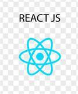

HOME :
Hi, I’m Logith Manikandan K
Welcome to my portfolio!
I’m a passionate and dedicated college student with a strong interest in technology, programming, and innovation. I’m constantly exploring new tools and ideas to improve my skills and contribute to meaningful projects.
📚 Current CGPA: 8.143
🎯 Goal: To build a career in software development and continuously grow as a tech professional.
“Learning never exhausts the mind — it only strengthens it.”
ABOUT :
👨💻 About
I’m Logith Manikandan K, an enthusiastic learner and aspiring software developer. Currently pursuing my undergraduate degree, I’ve been developing a solid foundation in computer science and problem-solving.
My academic performance reflects my commitment, with a CGPA of 8.143, and I am eager to apply my theoretical knowledge to real-world applications. I enjoy working on creative projects, coding challenges, and learning about emerging technologies such as web development, data structures, and AI.
🌟 Key Strengths
⌀ Strong analytical and logical thinking
⌀ Good communication and teamwork skills
⌀ Quick learner with a growth mindset
⌀ Passion for coding and continuous improvement
💻 Technical Interests
⌀ Web Development
⌀ Data Structures & Algorithms
⌀ Java, Python, and JavaScript
⌀ Frontend frameworks like React
SKILLS :



CONTACT :